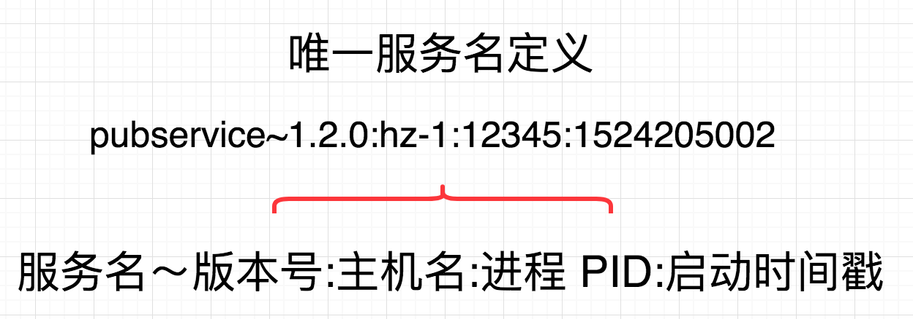
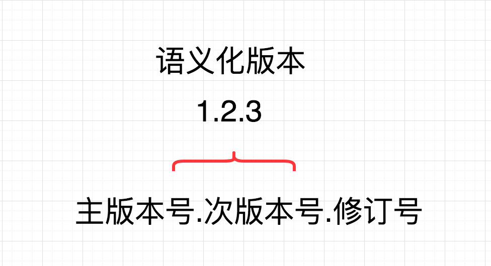
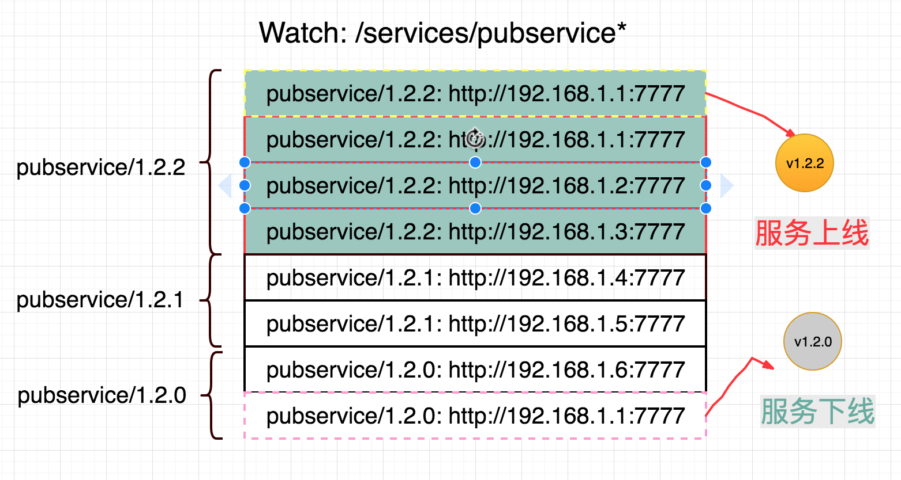
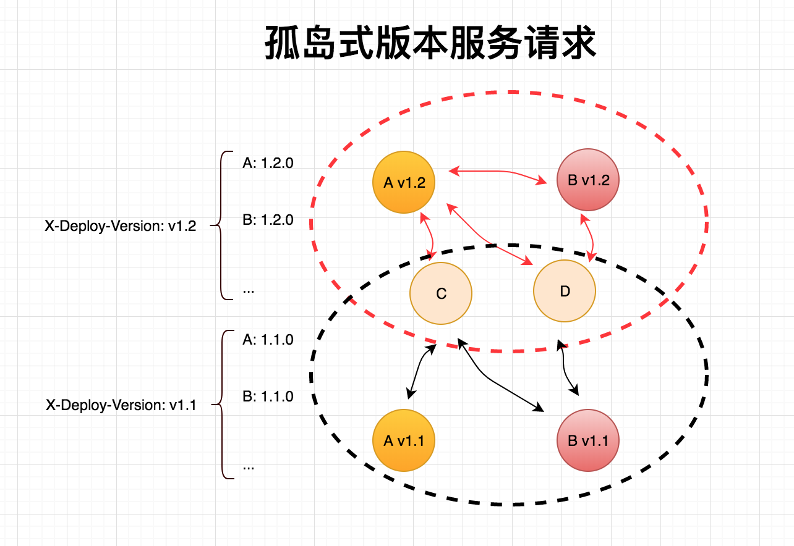
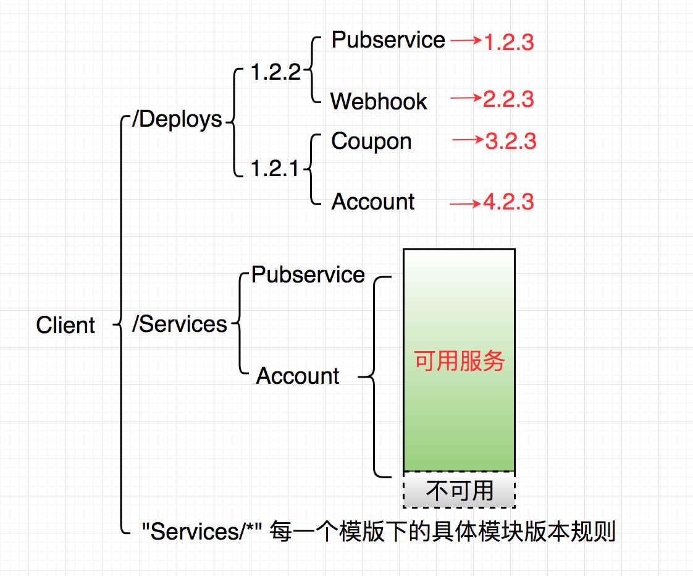

name: inverse layout: true class: center, middle, inverse --- # Confd [配置中心] .footnote[yunzhou.wu@pingxx.com] --- layout: false ### 四个 Demo 演示 - 值的变更 - 获取值，随着 Etcd 修改而更新 - 关注值，注册函数的回调 - 注册一个函数，用于关注指定值的变更 - 资源的变更 - 更改 Mysql 配置，就能访问新的数据库 - 更改 Redis 配置，就能访问新的 Redis - 优先级展示，API / WEB 支持 - 优先级模版 - 提供基于目录模型的 API - 使用开源 Etcd 编辑页面 --- ## 目前配置项存在的问题： - 配置项都是只读数据 - 更改配置项意味着重新发布，应用重启 - 应用 vs 运维 使用维度的不同 - 配置项 API 级别的支持 - 相同应用，同一配置项不同值的情况 --- ## 现在遇到的几个案例 - Trace Sample 采样率 - 是否可以动态变更 - API 支持变更 - Webhook DB Switch - 关键服务上线顺序 - 风险控制 - Webhook 队列的梯度消费 - 同一配置项不同值的情况 - 灰度发布 - 通过 X-Deploy-Version 访问指定的服务版本 --- ## Etcd3  --- ## 利用 Etcd 构建的配置中心(消息更新推送)  --- ## Etcd3 带来的一些变更 - 二进制协议(grpc) - value: []byte，任意值 - 基于前缀而不是目录，watch prefix --- ## 优先级，复用，服务化 - 初始化环境配置项问题 - 只是为了修改部分值 - 减少路由，由 slb 转向 smart client - 服务化，租约把进程和服务周期绑定 - 灰度发布，从一个发布大版本得到指定服务版本规则，并且找到服务地址 --- ## 开发者的角度 - struct 层级配置项，映射到 kv - yaml.Unmarshal 无缝转向 config.Unmarshal，同时保留 yaml 配置项可用，这样不依赖于 Etcd - []byte 映射到基础类型：int, float, string, duration, time 以及对应的复数类型 - []byte 映射到复杂类型：Mysql/Redis/Kafka/Elk ... - 并发安全，如果存在本地配置项和 Etcd 长期不一致，这个项目可以说失败了 - 单一数据修改源的概念 - 所有值的修改，必须通过 Etcd 来修改并且分发，不能自己修改本地变量 --- ## 优先级 - 可以监听多个模版，比如 [webhook-host-hz-1, webhook, api, pingxx] 优先级 webhook-host-hz-1 > webhook > api > pingxx - Get 取值的时候，从优先级最高开始，比如 key: trace_sample - 尝试查询 /config/webhook-host-hz-1/trace_sample - 尝试查询 /config/webhook/trace_sample - ... 直到找到为止 - Watch 获取更新的时候，如果更高优先级模版没有存在此 key 值，那么接受更新，否则忽略，比如 key: /config/pingxx/trace_sample - 判断 /config/api/trace_sample 是否存在，如果存在忽略更新 - 判断 /config/webhook/trace_sample 是否存在，如果存在忽略更新 - ... 如果都不存在，接收 /config/pingxx/trace_sample 的更新 --- ## 服务化 - 服务的定义 - 服务名的唯一性 - 版本号的概念 - 租约以及服务的生命周期 - 版本号规则 - Smart Client 的实现 --- ## 服务的定义 服务是一个抽象的定义： Ping++ Pingpp, Pubservice, Coupon, Account 都可以视为服务 Mysql, Redis, ELK, NSQ 也可以看作服务 互联网服务一般有下面几个要素： - 名字（Pubservice, Coupon, Account, Mysql, Redis, ELK, NSQ...） - 协议（http, tcp, udp） - 目标地址（域名/IP + 端口） 举个例子： - pubservice: - http://127.0.0.1:7777 - mysql: - user:password@tcp(192.168.22.251:3306)/dbname?charset=utf8mb4 --- ## 服务名的唯一性 同一个服务可以有多个实例，比如多个 Pubservice 在线，访问任意一个地址都可以 名字的唯一性有利于寻址，所以我们设计了如下的服务名：  ### 在唯一的同时，让名字本身具备语义 --- ## 版本号的概念 和服务号一样，语义化的版本号，有助于理解和基于版本规则选择  - 主版本号：当你做了不兼容的 API 修改 - 次版本号：当你做了向下兼容的功能性新增 - 修订号：当你做了向下兼容的问题修正 --- ## 租约以及服务的生命周期 Etcd 提供了租约的概念，Key/Value 的值，可以关联一个 Lease - 租约有效，Key/Value 就存在；租约到期，Key/Value 就自动删除 - 租约可以持续续约，一直有效，需要使用 Keep-Alive 一直保持租约的有效性 - <strong style="color: red"> 服务的在线/下线，可用/不可用，最终体现在 Etcd 的 Key 值 </strong> - 从程序/服务的角度讲，很好的和租约的概念关联在一起 - 程序上线，租约有效，添加 Key，服务就上线 - 程序下线，租约过期，删除 Key，服务就下线 --- ## 服务与 Etcd Key  服务和线条表示如下： - 虚线黄色是 Etcd 新增一条记录，代表一个 1.2.2 pubservice 服务上线 - 实线红色/黄色 代表不同版本的现有服务 - 虚线粉红色是 Etcd 删除一条记录，代表一个 1.2.0 pubservice 服务下线 --- ## 版本规则 基于版本选择服务，引入 “版本规则” 的概念： - "*" 可以访问任何版本 - "1.\*" , "1.6.\*" 可以访问某个主版本，或者次版本号下所有版本，比如任何的 1.x.x，或者任何的 1.6.x 版本 - "1.6.3+" 可以访问任何 1.6.3 以上版本（包括 1.6.3） - "1.6.3-" 可以访问任何 1.6.3 以下版本（包括 1.6.3） - "1.6.3" 只允许访问指定版本 绝大部分，我们只需要访问指定版本的服务 如果多版本在线，并且存在不兼容，才需要指定特定的版本范围 比如 1.\* 和 2.\* 版本共存，但是相互不兼容 --- ## Smart Client 的实现 client 需要监听 etcd watch 如下的目录前缀： - /deploys/ 同步大发布版本 - /services/ 同步上线的服务 - 优先模版下的每一个 "/services/" 前缀 遇到的可能挑战： - 数据和 etcd 不同步，意味着着服务状态已经不一致，这是致命的，要非常小心 - 服务短时间不可用，如何主动的把对应服务放入暂时不可用列表 - 在不可用列表，如何主动检测服务已经恢复可用，之后该服务放到服务列表 --- ## 灰度发布 - 目的 - 发布版本号的定义 - 灰度的请求拓扑结构 - Go 的实现 - PHP 的支持 - 存在的问题 --- ## 目的 通过 HTTP Request 设置发布版本号，贯穿所有的服务（同 iar_id） - 由 “发布版本号” 定义具体服务的版本号规则 - 由 “版本号规则” 查询出多个服务入口（Endpoints） - 随机选择一个 Endpoint 来调用服务 API 这个过程，预发布版本和生产环境互相不干扰， 只有特殊入口才可以进入预发布服务集合。 我们可以基于： - 预发布域名，比如 deploy.api.pingxx.com - 这里的请求网关都加上最新 “发布版本号” - account id 加上最新 “发布版本号” - 测试时选择具体 “发布版本号” --- ## 发布版本号的定义 ``` /deploys/1.2.0/ |--- pubservice: 1.2.0 |--- webhook: 1.6.0+ |--- coupon: 1.2.* > curl -H "X-Deploy-Version: 1.2.0" http://ip:port/v1/path ``` 使用 "X-Deploy-Version: 1.2.0" HTTP Header 请求服务入口 对于后续的服务，该 HTTP Header 贯通所有的服务 发布版本号，提前定义，持续递增 --- ## 灰度的请求拓扑结构  --- ## 灰度的请求拓扑结构 依赖上面的机制，我们能确定： 虚线红框，和虚线黑框，分别运行这 （A v1.2，B v1.2，C，D），（A v1.1，B v1.1，C，D）两个服务集合。 并且，不会出现，有红色箭头，和黑色箭头，混合访问的情况，也就是 A v1.2 → C → B v1.1 的情况。 在灰度发布情况，我们甚至可以阶段性增量发布，按照比例放开 v1.2 大版本的上线比例以及访问量。 回滚：只需要将 A v1.2，B v1.2 重新发布回 A v1.1，B v1.1 就可以了。 --- ## Go 的实现 Go 是常驻内存的方式，所以可以维护数据结构来访问具体服务，数据结构如下：  --- ## PHP 的支持 因为 PHP 的特性，把服务地址查找转化成为两次 Redis 请求 实现如下： 由后台保证 Etcd 数据同步到 Redis，包括发布版本号，服务在线状态 PHP 应用，从 Header 获取 "X-Deploy-Version"，得到 1.2.0， 1. 当前请求 pubservice 服务，使用 "get config:/deploys/1.2.0/pubservice" 来获取服务版本号，是 string 类型，比如 "1.2.3" 2. 再次请求 pubservice 服务的 Endpoints，使用 "hvals config:/services/pubservice/1.2.3" 来获取服务地址信息，是 Lists 类型，比如 ["http://localhost:1234", "http://localhost:1235"] 3. PHP 从列表里，随机选择一个服务地址来做 API 请求 --- ## 目标第一期 - 从 etcd 读写基础类型 int, string, ... API 接口 GetInt(key) SetInt(key, value) - 从 yaml 配置项迁移到 etcd，无缝对接 config.Unmarshal() - 并发数据类型的支持 XXX.Load() XXX.Store(value) - 主动读取配置项 - 被动更新配置项 - 提供配置项编辑页面，是否强类型支持？ --- ## 目标第二期 - 实现 OnChange 接口，任何资源都可以接入 etcd，struct 多层级赋值 - 内部复合类型的定义，比如 Mysql，Redis 等资源类型，涉及到数据初始化 - 实现继承，优先级，配置项的共享和复用 - 引入 “引用” 的概念，便于减少数据的冗余，比如 - a => b, b => c - 那么对于 a 值，不管是 a，b，c 修改，都应该触发更新 --- ## 目标第三期 - 服务化：配置项的变更，意味着资源的变化，资源路由的扁平化 - 应用上线之后状态，数据的统计，推送到 Etcd，使用租约 - 引入 “模版” 的概念？其实是 “引用” 的一个升级，比如 - a => "{{b}}:{{c}}"，如果 b: "hello", c: "world"，那么 a 就是 "hello:world" - 使用模版，用 b，c 变量进行渲染 - 那么对于 a 值，不管是 a，b，c 修改，都应该触发更新 --- ## 目标第四期 - 符合运维使用的配置中心 - 基于配置中心做发布系统 - 不再依赖 yaml，启动应用，通过命令行启动应用 ``` > ./app --name=webhook-master/1.6 --etcds=127.0.0.1:2379,... ``` ---